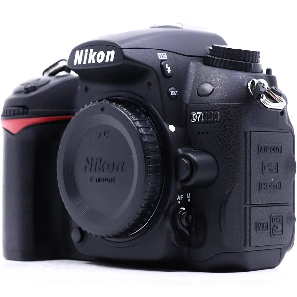
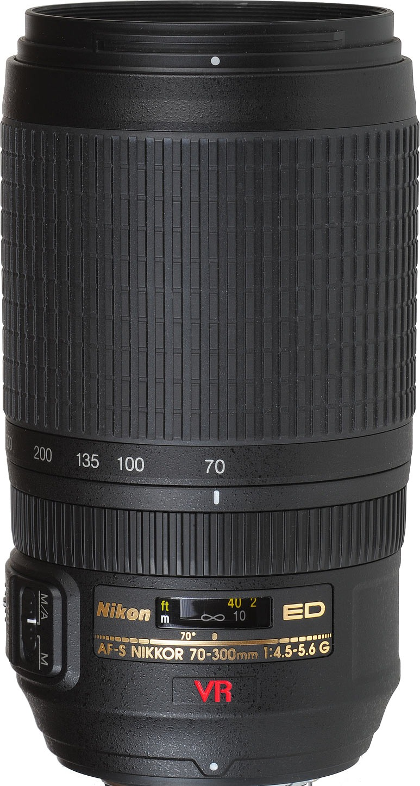
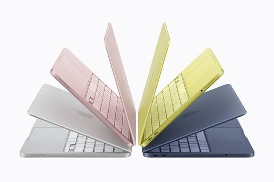

Adobe Lightroom
My primary editing software for RAW development, exposure and color adjustments, cropping, sharpening, noise reduction, and preparing photographs for social media and the web.
The equipment behind my aviation photography, from capturing aircraft in the air to processing the final image.

My primary camera is the Nikon D7100. Its 24.1-megapixel DX-format sensor gives me useful resolution for cropping aircraft photographs, which is especially important when photographing subjects at a distance.

My primary aviation lens is Nikon's 70–300mm VR telephoto zoom. On the D7100's DX-format sensor, its field of view is approximately equivalent to a 105–450mm lens on a 35mm-format camera, giving me the reach I need for aircraft photography.

My MacBook Neo is the main computer I use for importing, organizing, editing, and preparing photographs for publication. It gives me a portable workflow for working with my aviation photography away from my desktop.
My primary editing software for RAW development, exposure and color adjustments, cropping, sharpening, noise reduction, and preparing photographs for social media and the web.
I photograph in RAW when appropriate, then organize and develop the files in Lightroom before exporting finished photographs for the portfolio and social platforms.